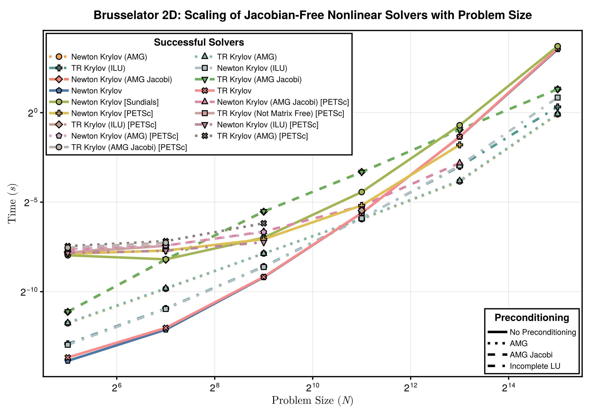

Ill-Conditioned Nonlinear System Work-Precision Diagrams (Krylov Methods)
Setup
Fetch required packages
using NonlinearSolve, LinearAlgebra, SparseArrays, DiffEqDevTools,
CairoMakie, Symbolics, BenchmarkTools, PolyesterForwardDiff, LinearSolve, Sundials,
Enzyme, SparseConnectivityTracer, DifferentiationInterface, SparseMatrixColorings
import NLsolve, MINPACK, PETSc, RecursiveFactorization
const RUS = RadiusUpdateSchemes;
BenchmarkTools.DEFAULT_PARAMETERS.seconds = 0.2;Define a utility to timeout the benchmark after a certain time.
# Taken from ReTestItems.jl
function timeout(f, timeout)
cond = Threads.Condition()
timer = Timer(timeout) do tm
close(tm)
ex = ErrorException("timed out after $timeout seconds")
@lock cond notify(cond, ex; error=false)
end
Threads.@spawn begin
try
ret = $f()
isopen(timer) && @lock cond notify(cond, ret)
catch e
isopen(timer) && @lock cond notify(cond, CapturedException(e, catch_backtrace()); error=true)
finally
close(timer)
end
end
return @lock cond wait(cond) # will throw if we timeout
end
function get_ordering(x::AbstractMatrix)
idxs = Vector{Int}(undef, size(x, 1))
placed = zeros(Bool, size(x, 1))
idx = 1
for j in size(x, 2):-1:1
row = view(x, :, j)
idxs_row = sortperm(row; by = x -> isnan(x) ? Inf : (x == -1 ? Inf : x))
for i in idxs_row
if !placed[i] && !isnan(row[i]) && row[i] ≠ -1
idxs[idx] = i
placed[i] = true
idx += 1
idx > length(idxs) && break
end
end
idx > length(idxs) && break
end
return idxs
endget_ordering (generic function with 1 method)Brusselator
Define the Brussletor problem.
brusselator_f(x, y) = (((x - 3 // 10) ^ 2 + (y - 6 // 10) ^ 2) ≤ 0.01) * 5
limit(a, N) = ifelse(a == N + 1, 1, ifelse(a == 0, N, a))
function init_brusselator_2d(xyd, N)
N = length(xyd)
u = zeros(N, N, 2)
for I in CartesianIndices((N, N))
x = xyd[I[1]]
y = xyd[I[2]]
u[I, 1] = 22 * (y * (1 - y))^(3 / 2)
u[I, 2] = 27 * (x * (1 - x))^(3 / 2)
end
return u
end
function generate_brusselator_problem(N::Int; sparsity = nothing, kwargs...)
xyd_brusselator = range(0; stop = 1, length = N)
function brusselator_2d_loop(du_, u_, p)
A, B, α, δx = p
α = α / δx ^ 2
du = reshape(du_, N, N, 2)
u = reshape(u_, N, N, 2)
@inbounds @simd for I in CartesianIndices((N, N))
i, j = Tuple(I)
x, y = xyd_brusselator[I[1]], xyd_brusselator[I[2]]
ip1, im1 = limit(i + 1, N), limit(i - 1, N)
jp1, jm1 = limit(j + 1, N), limit(j - 1, N)
du[i, j, 1] = α * (u[im1, j, 1] + u[ip1, j, 1] + u[i, jp1, 1] + u[i, jm1, 1] -
4u[i, j, 1]) +
B + u[i, j, 1] ^ 2 * u[i, j, 2] - (A + 1) * u[i, j, 1] +
brusselator_f(x, y)
du[i, j, 2] = α * (u[im1, j, 2] + u[ip1, j, 2] + u[i, jp1, 2] + u[i, jm1, 2] -
4u[i, j, 2]) +
A * u[i, j, 1] - u[i, j, 1] ^ 2 * u[i, j, 2]
end
return nothing
end
return NonlinearProblem(
NonlinearFunction(brusselator_2d_loop; sparsity),
vec(init_brusselator_2d(xyd_brusselator, N)),
(3.4, 1.0, 10.0, step(xyd_brusselator));
kwargs...
)
endgenerate_brusselator_problem (generic function with 1 method)Jacobian-Free Newton / TR Krylov Methods
In this section, we will benchmark jacobian-free nonlinear solvers with Krylov methods. We will use preconditioning from AlgebraicMultigrid.jl and IncompleteLU.jl. Unfortunately, our ability to use 3rd party software is limited here, since only Sundials.jl supports jacobian-free methods via :GMRES.
using AlgebraicMultigrid, IncompleteLU
incompletelu(W, p = nothing) = ilu(W, τ = 50.0), LinearAlgebra.I
function algebraicmultigrid(W, p = nothing)
return aspreconditioner(ruge_stuben(convert(AbstractMatrix, W))), LinearAlgebra.I
end
function algebraicmultigrid_jacobi(W, p = nothing)
A = convert(AbstractMatrix, W)
Dinv = 1.0 ./ diag(A) # PETSc-style Jacobi: inverse of diagonal
smoother = AlgebraicMultigrid.Jacobi(Dinv)
Pl = aspreconditioner(AlgebraicMultigrid.ruge_stuben(
A,
presmoother = smoother,
postsmoother = smoother
))
return Pl, LinearAlgebra.I
end
Ns = 2 .^ (2:7)
krylov_dim = 1000
solvers_scaling_jacobian_free = [
(; pkg = :nonlinearsolve, name = "Newton Krylov", alg = NewtonRaphson(; linsolve = KrylovJL_GMRES())),
(; pkg = :nonlinearsolve, name = "Newton Krylov (ILU)", alg = NewtonRaphson(; linsolve = KrylovJL_GMRES(; precs = incompletelu), concrete_jac = true)),
(; pkg = :nonlinearsolve, name = "Newton Krylov (AMG)", alg = NewtonRaphson(; linsolve = KrylovJL_GMRES(; precs = algebraicmultigrid), concrete_jac = true)),
(; pkg = :nonlinearsolve, name = "Newton Krylov (AMG Jacobi)", alg = NewtonRaphson(; linsolve = KrylovJL_GMRES(; precs = algebraicmultigrid_jacobi), concrete_jac = true)),
(; pkg = :nonlinearsolve, name = "TR Krylov", alg = TrustRegion(; linsolve = KrylovJL_GMRES())),
(; pkg = :nonlinearsolve, name = "TR Krylov (ILU)", alg = TrustRegion(; linsolve = KrylovJL_GMRES(; precs = incompletelu), concrete_jac = true)),
(; pkg = :nonlinearsolve, name = "TR Krylov (AMG)", alg = TrustRegion(; linsolve = KrylovJL_GMRES(; precs = algebraicmultigrid), concrete_jac = true)),
(; pkg = :nonlinearsolve, name = "TR Krylov (AMG Jacobi)", alg = TrustRegion(; linsolve = KrylovJL_GMRES(; precs = algebraicmultigrid_jacobi), concrete_jac = true)),
(; pkg = :wrapper, name = "Newton Krylov [Sundials]", alg = KINSOL(; linear_solver = :GMRES, maxsetupcalls=1, krylov_dim)),
(; pkg = :wrapper, name = "Newton Krylov [PETSc]", alg = PETScSNES(; snes_type = "newtonls", snes_linesearch_type = "basic", ksp_type = "gmres", snes_mf = true, ksp_gmres_restart = krylov_dim)),
(; pkg = :wrapper, name = "Newton Krylov (ILU) [PETSc]", alg = PETScSNES(; snes_type = "newtonls", snes_linesearch_type = "basic", ksp_type = "gmres", pc_type = "ilu", ksp_gmres_restart = krylov_dim, pc_factor_levels = 0, pc_factor_drop_tolerance = 50.0)),
(; pkg = :wrapper, name = "Newton Krylov (AMG) [PETSc]", alg = PETScSNES(; snes_type = "newtonls", snes_linesearch_type = "basic", ksp_type = "gmres", pc_type = "gamg", ksp_gmres_restart = krylov_dim)),
(; pkg = :wrapper, name = "Newton Krylov (AMG Jacobi) [PETSc]", alg = PETScSNES(; snes_type = "newtonls", snes_linesearch_type = "basic", ksp_type = "gmres", pc_type = "gamg", mg_levels_ksp_type = "richardson", mg_levels_pc_type = "jacobi", ksp_gmres_restart = krylov_dim)),
(; pkg = :wrapper, name = "TR Krylov (Not Matrix Free) [PETSc]", alg = PETScSNES(; snes_type = "newtontr", ksp_type = "gmres", ksp_gmres_restart = krylov_dim)),
(; pkg = :wrapper, name = "TR Krylov (ILU) [PETSc]", alg = PETScSNES(; snes_type = "newtontr", ksp_type = "gmres", pc_type = "ilu", ksp_gmres_restart = krylov_dim, pc_factor_levels = 0, pc_factor_drop_tolerance = 50.0)),
(; pkg = :wrapper, name = "TR Krylov (AMG) [PETSc]", alg = PETScSNES(; snes_type = "newtontr", ksp_type = "gmres", pc_type = "gamg", ksp_gmres_restart = krylov_dim)),
(; pkg = :wrapper, name = "TR Krylov (AMG Jacobi) [PETSc]", alg = PETScSNES(; snes_type = "newtontr", ksp_type = "gmres", pc_type = "gamg", mg_levels_ksp_type = "richardson", mg_levels_pc_type = "jacobi", ksp_gmres_restart = krylov_dim)),
]
gc_disabled = false
runtimes_scaling = fill(-1.0, length(solvers_scaling_jacobian_free), length(Ns))
for (j, solver) in enumerate(solvers_scaling_jacobian_free)
alg = solver.alg
name = solver.name
if !gc_disabled && alg isa PETScSNES
GC.enable(false)
global gc_disabled = true
@info "Disabling GC for $(name)"
end
for (i, N) in enumerate(Ns)
prob = generate_brusselator_problem(N; sparsity = TracerSparsityDetector())
if (j > 1 && runtimes_scaling[j - 1, i] == -1)
# The last benchmark failed so skip this too
runtimes_scaling[j, i] = NaN
@warn "$(name): Would Have Timed out"
else
function benchmark_function()
termination_condition = (alg isa PETScSNES || alg isa KINSOL) ?
nothing :
NonlinearSolveBase.AbsNormTerminationMode(Base.Fix1(maximum, abs))
# PETSc doesn't converge properly
tol = alg isa PETScSNES ? 1e-6 : 1e-4
sol = solve(prob, alg; abstol=tol, reltol=tol,
linsolve_kwargs = (; abstol = 1e-8, reltol = 1e-8),
termination_condition)
if SciMLBase.successful_retcode(sol) || norm(sol.resid, Inf) ≤ 1e-4
runtimes_scaling[j, i] = @belapsed solve($prob, $alg;
abstol=$tol, reltol=$tol,
linsolve_kwargs = (; abstol = 1e-8, reltol = 1e-8),
termination_condition=$termination_condition)
else
runtimes_scaling[j, i] = NaN
end
@info "$(name): $(runtimes_scaling[j, i]) | $(norm(sol.resid, Inf)) | $(sol.retcode)"
end
timeout(benchmark_function, 600)
if runtimes_scaling[j, i] == -1
@warn "$(name): Timed out"
runtimes_scaling[j, i] = NaN
end
end
end
println()
endPlot the results.
fig = begin
ASPECT_RATIO = 0.7
WIDTH = 1200
HEIGHT = round(Int, WIDTH * ASPECT_RATIO)
STROKEWIDTH = 2.5
successful_solvers = map(x -> any(isfinite, x), eachrow(runtimes_scaling))
solvers_scaling_jacobian_free = solvers_scaling_jacobian_free[successful_solvers]
runtimes_scaling = runtimes_scaling[successful_solvers, :]
cycle = Cycle([:marker], covary = true)
colors = cgrad(:tableau_20, length(solvers_scaling_jacobian_free); categorical = true)
theme = Theme(Lines = (cycle = cycle,), Scatter = (cycle = cycle,))
LINESTYLES = Dict(
:none => :solid,
:amg => :dot,
:amg_jacobi => :dash,
:ilu => :dashdot,
)
Ns_ = Ns .^ 2 .* 2
with_theme(theme) do
fig = Figure(; size = (WIDTH, HEIGHT))
ax = Axis(fig[1, 1:2], ylabel = L"Time ($s$)", xlabel = L"Problem Size ($N$)",
xscale = log2, yscale = log2, xlabelsize = 22, ylabelsize = 22,
xticklabelsize = 20, yticklabelsize = 20, xtickwidth = STROKEWIDTH,
ytickwidth = STROKEWIDTH, spinewidth = STROKEWIDTH)
idxs = get_ordering(runtimes_scaling)
ls, scs, labels = [], [], []
for (i, solver) in zip(idxs, solvers_scaling_jacobian_free[idxs])
all(isnan, runtimes_scaling[i, :]) && continue
precon = occursin("AMG Jacobi", solver.name) ? :amg_jacobi : occursin("AMG", solver.name) ? :amg : occursin("ILU", solver.name) ? :ilu : :none
linestyle = LINESTYLES[precon]
l = lines!(Ns_, runtimes_scaling[i, :]; linewidth = 5, color = colors[i],
linestyle)
sc = scatter!(Ns_, runtimes_scaling[i, :]; markersize = 16, strokewidth = 2,
color = colors[i])
push!(ls, l)
push!(scs, sc)
push!(labels, solver.name)
end
axislegend(ax, [[l, sc] for (l, sc) in zip(ls, scs)], labels,
"Successful Solvers";
framevisible=true, framewidth = STROKEWIDTH, orientation = :vertical,
titlesize = 20, labelsize = 16, position = :lt, nbanks = 2,
tellheight = true, tellwidth = false, patchsize = (40.0f0, 20.0f0))
axislegend(ax, [
LineElement(; linestyle = :solid, linewidth = 5),
LineElement(; linestyle = :dot, linewidth = 5),
LineElement(; linestyle = :dash, linewidth = 5),
LineElement(; linestyle = :dashdot, linewidth = 5),
], ["No Preconditioning", "AMG", "AMG Jacobi", "Incomplete LU"],
"Preconditioning"; framevisible=true, framewidth = STROKEWIDTH,
orientation = :vertical, titlesize = 20, labelsize = 16,
tellheight = true, tellwidth = true, patchsize = (40.0f0, 20.0f0),
position = :rb)
fig[0, :] = Label(fig,
"Brusselator 2D: Scaling of Jacobian-Free Nonlinear Solvers with Problem Size",
fontsize = 24, tellwidth = false, font = :bold)
return fig
end
end
save("brusselator_krylov_methods_scaling.svg", fig)CairoMakie.Screen{SVG}